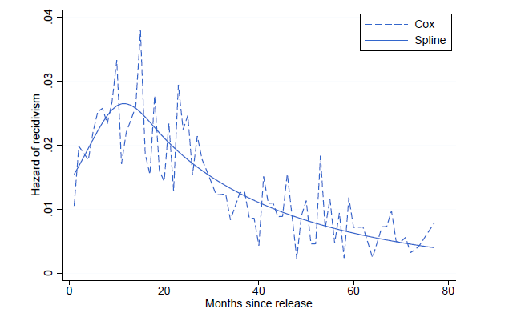
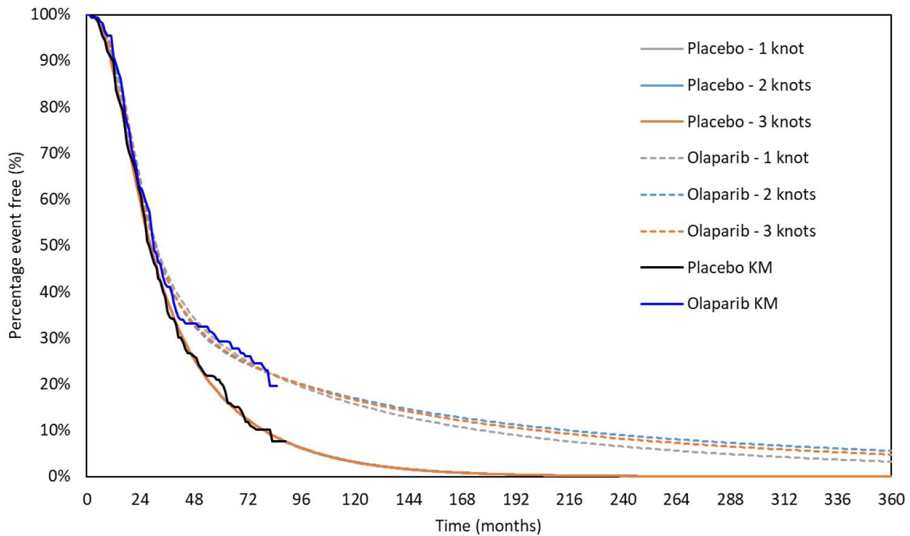
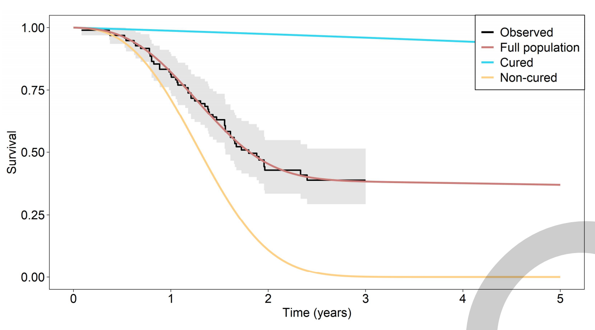
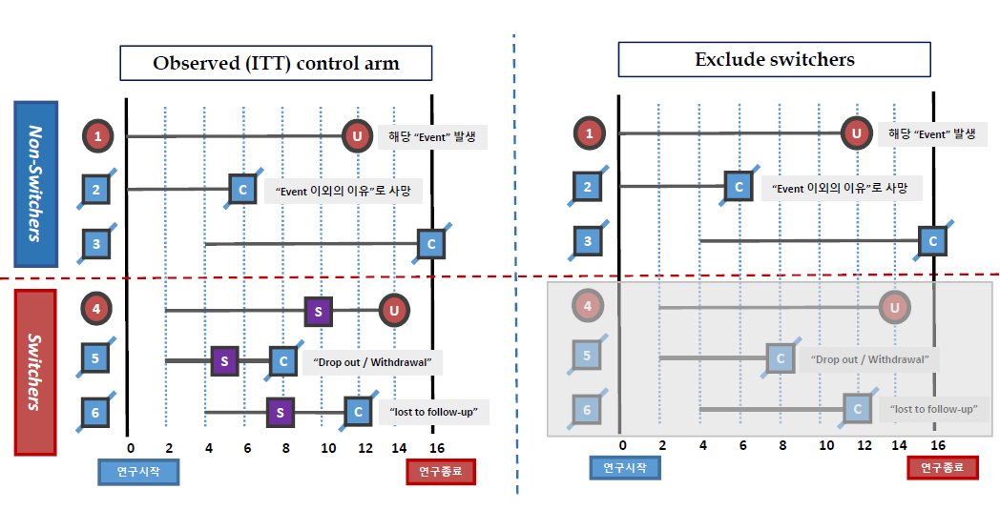
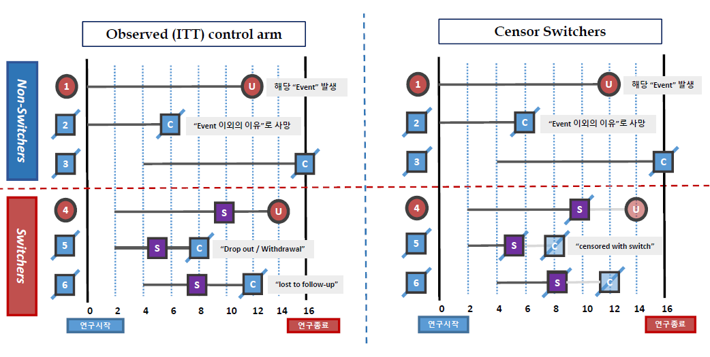
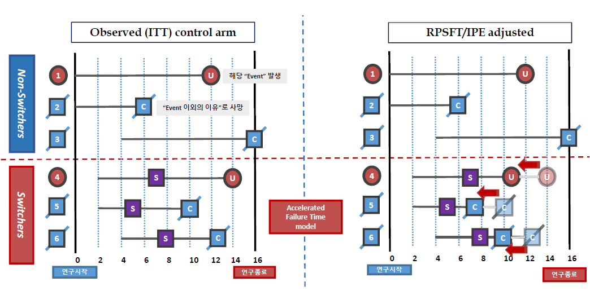
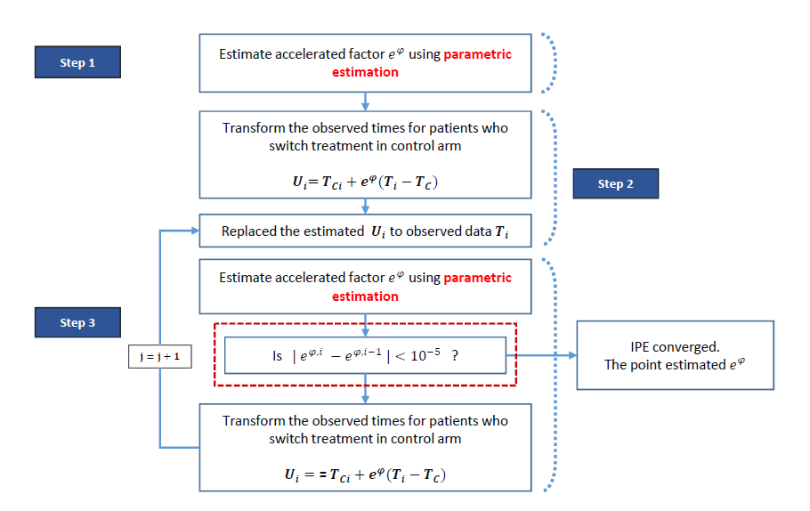
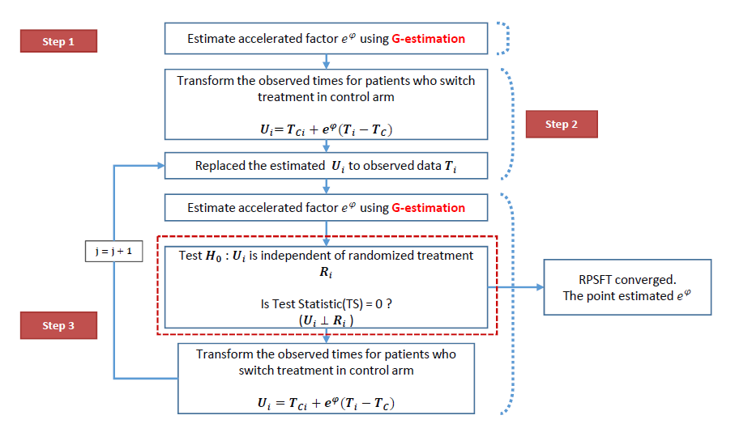
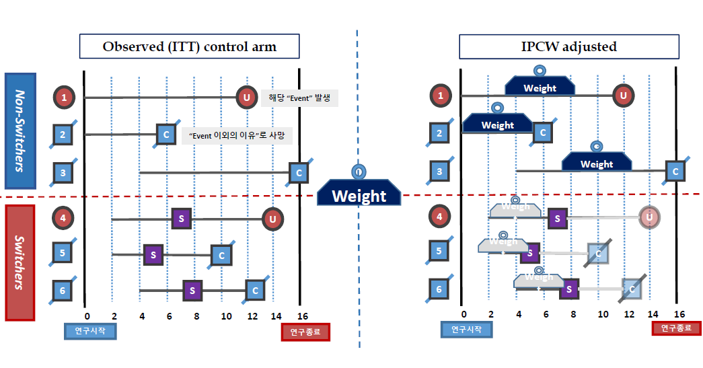
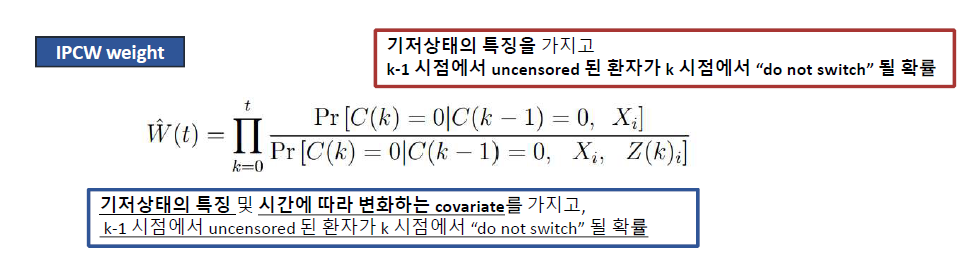

Chapter 6 기타 이슈
6.1 AIC and BIC
- Comparing model fits to select the most appropriate model
6.2 추정방법에 따른 차이
6.2.1 Piecewise
- Consider models that assume a parametric form, so we can easily estimate the hazard or survival probabilities, yet are flexible.
6.2.1.1 Piecewise exponential model
- Baseline hazard is assumed constant in well-chosen intervals, defined by cutpoints
\[ 0=\tau_0<\tau_1 <\cdots < \tau_{k-1} < \tau_k = \infty \]
- So the baseline hazard at any time is one of \(k\) values
\[ \lambda_0(t)=\lambda_{0i} \]
when \(t \in (\tau_{i-1}, \tau_i]\)
- The model may be fit easily by splitting the data at the cut points \(\tau_1\) to \(\tau_{k-1}\)
- Then fitting an exponential survival model with the interval treated as a factor
6.2.2 Splines
Spline is a piecewise polynomial defined over a series of knots \(\xi_1 < ... < \xi_k\) such that the pieces join smoothly at each knot
Cubic splines are particularly useful, and can be defined as
\[ S(x)=\beta_0 +\beta_1x +\beta_2 x^2 +\beta_3 x^3 +\sum_{j=1}^k \gamma_j(x-\xi_j)_+^3 \]
where \((x-\xi_j)_+^3\) is zero when \(x<\xi_j\) and \((x-\xi_j)^3\) otherwise.
- Cubic spline is natural if it is linear outside the range of the knots


Cubic splines can behave poorly in the tail, i.e. before the first knot and after the last knot.
Restricted cubic splines address this limitation by constraining the function to be linear in the tails.
\[ S(x)=\beta_0+\beta_1x_1+\beta_2x_2+\cdots+\beta_{k-1}x_{k-1} \]
where \(x_1=x\) and for \(j=1,...,k-2\),
\[ x_{j+1}=(x-\xi_j)_+^3-(x-\xi_{k-1})_+^3(\xi_k-\xi_j)/(\xi_k-\xi_{k-1})+(x-\xi_k)_+^3(\xi_{k-1}-\xi_j)/(\xi_k-\xi_{k-1}) \]
6.2.3 Mixture cured model
Assumes two groups: cured (p) vs non-cured (1-p)
Cure fraction p is determined at a population level
Survival= probability cured \(\times\) survival cured + probability non-cured \(\times\) survival non-cured
\[ S(t) = S^B(t)(p+ (1-p)S^D(t)) \]

Not possible to identify patients who would be “cured”
Definition of “cure” may differ from the intuitive interpretation of cure
6.3 Crossover / Treatment switching
임상시험 중, 환자가 치료약제를 변경하는 경우를 의미
일반적으로 control군 환자가 임상시험 시작 후, 질병진행이 발생하는 경우 intervention으로 치료약제를 변경
Treatment switching occur in RCT both ethical and practical reasons
6.3.1 Crossover 보정방법
6.3.1.1 Simple method
- ITT (intention to treat)
- without adjusting for treatment switching
- Exclude switchers
- Patients are excluded entirely from the analysis
- Assumption: switchers and non switchers have the same prognosis

- Censor switchers
- Patients are censored at the point of treatment switching
- Assumption: switchers and non switchers have the same prognosis

- Limitation of simple method
- May disrupt the between-group balance achieved through randomization
- Will lead the selection bias -> Bias in estimated results
6.3.1.2 Complex method
- Statistical way to estimate of treatment switching
- IPE (iterative parameter estimation) - Branson and Whitehead, 2002
- RPSFT (Rank reserving structural failure time) - Robins and Tsiatis, 1991
- IPCW (inverse probability of censoring weighting) - Robins et al., 1970
- Two-stage estimation - Latimer (2017)
- Purpose
- Estimate the survival time gained/lost by receiving active treatment
- i.e. either randomized or “cross-over” active treatment
- Main assumption
- Constant treatment effect regardless of when the experimental treatment is initiated
- Treatments arms are balanced in terms of underlying prognostic factors
- It works by reconstructing the survival duration of patients, as if they had never received active treatment
- Use multiplicative factor (= accelerated factor)
- latent survival time and conterfactual survival time
- Goal: estimate the counterfactual event-time based on accelerated failure time models
- RPSFT and IPE (adjust post switch time)


- IPE - Estimation algorithm

- RPSFT - Estimation algorithm

- IPCW
- Originally developed in observational studies to estimate the causal treatment effect when informative censoring associated with selective switch therapy or dropout is present
- Uses time-dependent Cox PH models with time varing weights
- Reweights control arm patients using propensity score methods
- No unmeasured confounders Assumption
- All baseline and time-dependent prognostic factors are measured and available
- Baseline characteristic
- Age, Sex, Tx group, Previous treatment
- Time varing (dependent) covariate
- level (measure) of lab test, size of lesion, number of grade 3 AE

- IPCW weight

- IPCW method artificially
- Increases weights for patients with low probability of treatment switch (do not switch)
- Decreases weights for patients with high probability of treatment switch (do switch)
- Conclusions in treatment switching
- In the presence of treatment switching, it is desirable to adjust the estimates of the treatment benefit, rather than to rely solely on an unadjusted ITT analysis.
- Otherwise, estimates of the treatment effect will be inaccurate, and inappropriate conclusions on the effectiveness and cost-effectiveness of the new interventions could be drawn, with important implications for clinical practice.
- Comments (Watkins et al., 2013)
- There are several statistical methods available to adjust long-term time-to-event endpoints for treatment switch.
- None is universally suitable in all situations, and different methods make different assumptions. Therefore, a careful review of the plausibility of those assumptions in the specific trial is required.